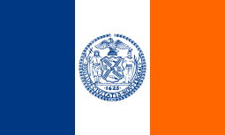

New York is de grootste stad van de Verenigde Staten van Amerika. New York heeft 8,6 miljoen inwoners. De grootste partij in New York is Democratische Partij en Bill de Blasio is de burgemeester. De stad wordt ook New York City of NYC genoemd om het te onderscheiden met de staat New York. In New York staat de vrijheidsbeeld en zijn veel museas. New Yor is het dichtsbevolke stad van amerika. New York doet het wat milieu betreft goed in vergelijking met andere steden zo is het gebruik van openbaar vervoer in de stad het hoogste van amerika. de stad heeft drie luchthavens dat zijn: John F. Kennedy International, ook bekend als JFK, Newark Liberty International en LaGuardia. Sinds 2006 heeft New York een speciaal programma voor het onderhouden van stedenbanden, genaamd New York City Global Partners. Sinds de uitrol van dit programma heeft New York een uitgebreid netwerk van partnersteden over de hele wereld.
De flag van New York.